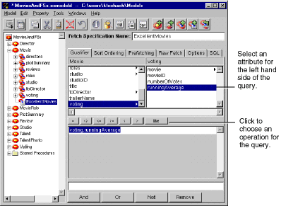
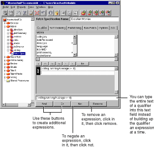

Table of Contents
Table of Contents  Next Section
Table of Contents
Next Section
Table of Contents  Previous Section
Previous Section
For example, a Movie has a Voting object that keeps a runningAverage of how reviewers have voted on the movie. Suppose you want to create a fetch specification for the Movie entity that fetches all movies whose runningAverage is greater than eight. To build the qualifier for such a query:
The text field just under the browser is updated to display the attribute as the left hand side of an expression. Note that the runningAverage attribute is represented by a key path (voting.runningAverage) that identifies the relationship (voting) through which the attribute is accessed.

Figure 41. Building an Expression.
EOModeler adds a greater than or equal to operator to the expression.
For example, building on the example in the previous section, suppose that you want to fetch movies with a runningAverage greater than or equal to eight but that also have at least ten voters contributing to the average. To further restrict the fetch specification:
EOModeler adds a second expression and ANDs it to the first expression.
As you build up a complex query, the text field at the bottom of the Query Builder updates to include the full text of the compound qualifier. Instead of building up expressions one by one with the And and Or buttons, you can type directly into this lower text field. The Qualifier Builder parses the qualifier string and displays the individual expressions.

Figure 42. Creating a Compound Qualifier
You specify a qualifier variable using the dollar sign character ($), as in the following:
dateReleased = $aDateFor example, suppose you want to allow users to search for movies by title, date released, or studio. The query would look like this:
((title = $title) ORYou can build this qualifier in EOModeler as specified in the previous sections, and then bind its qualifier variables (title, date, studioName) to your application's user interface. When the application runs, Enterprise Objects Framework automatically replaces the qualifier variables with values supplied in the user interface. You can set this up as follows:
(dateReleased = $date) OR
(studio.name = $studioName))
On the right side of each expression, use the $ syntax to identify the qualifier variables.
You might create text fields for the title and date released and a pop-up list for the studio name, for example.
This has the effect of creating a new display group for your specification's entity.
Table of Contents Next Section